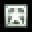

敵を倒したりするとアイテムが出現する事があります。

|
パワーアップアイテム Powerを1増やします。128で最大。
| 
パワーアップアイテム大 | Powerを8増やします。128で最大。
|
フルパワーアップアイテム | フルパワーアップします。
| 
得点アイテム | 得点が入ります。画面上部であればあるほど得点が高く、 最高で画面左下に書かれた得点だけ入ります。
|
スペルカードアイテム | スペルカードストックが１増えます。
| 
エクステンドアイテム | プレイヤーが一人増えます。

|
ボーナスアイテム | 若干得点が入ります。
|
刻符アイテム | 後述。
|
得点アイテム小 | 得点アイテムの10分の1の得点が入ります。 フルパワーアップの状態ではＰアイテムがこのアイテムに変化します。 |
このうちボーナスアイテムと刻符は、出現と同時に自キャラに吸収されます。 それ以外のアイテムは、アイテム蒐集を行えば自動的に吸収されます。
画面上部に自キャラを移動させると、画面上のアイテムを全て回収ことが出来ます。 フルパワーアップ状態ではない場合、妖怪操術にする必要があります。 フルパワーアップの時は、人間操術でも蒐集可能です。